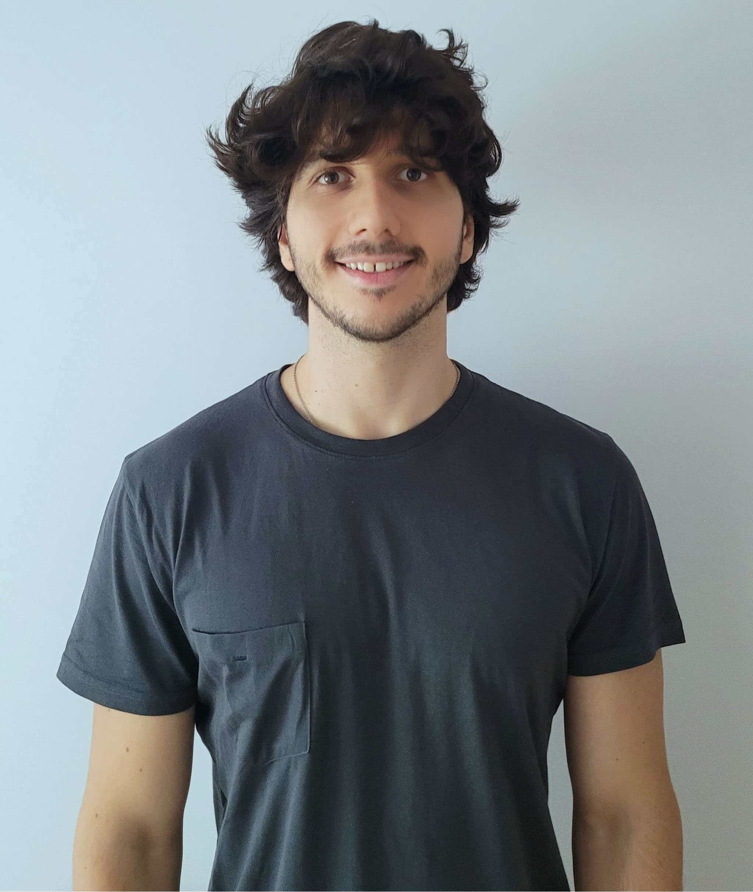

Estudiante de Ingeniería en Sistemas
Construyo cosas que corren, conectan y escalan.
Estudiante de Ingeniería en Sistemas en la UTN — buscando mi primera oportunidad profesional en tech.

01 sobre mí
Soy estudiante de Ingeniería en Sistemas en la UTN Buenos Aires, al 50% de la carrera, con ganas de incorporarme a un equipo donde pueda aportar con compromiso y actitud positiva.
Disfruto los desafíos, me adapto rápido a nuevos entornos y me apasiona aprender tecnologías nuevas. Actualmente trabajo como profesor particular de inglés, física, matemática y programación — una experiencia que potenció mi capacidad de comunicar ideas complejas con claridad.
Lenguajes
Frameworks y Herramientas
Certificándome
Explorando
Diseño
02 proyectos
Trabajo freelance
Sitio web profesional para una dermatóloga con consultorio en Pilar y Núñez, Buenos Aires. SEO técnico completo con datos estructurados Schema.org, Open Graph y sitemap. Integración de turnos vía WhatsApp y diseño responsive mobile‑first. Activo en producción.
Sitio corporativo para Korund S.A., fabricante argentino de ruedas abrasivas industriales. Catálogo de productos con fichas técnicas descargables en PDF, integración con Google Maps, diseño responsive multi‑dispositivo y optimización SEO. En producción.
Proyectos personales
Juego Snake para la consola de Windows donde la terminal pierde todas sus propiedades para convertirse en un renderer de software custom vía Win32 API. Game Talker dinámico, scoreboard con top‑3, registro de récords persistente y arquitectura modular en cuatro librerías.
Motor de raycasting 3D renderizado completamente en ASCII, aplicando lo aprendido en Console Snake para usar la terminal como renderer. Implementa el algoritmo DDA para proyección de rayos, niebla de distancia, head‑bobbing, minimapa con indicador de dirección y gradientes de color ANSI de 24 bits.
03 contacto
Disponible para oportunidades junior y pasantías en tech.
lucasalviani@gmail.com